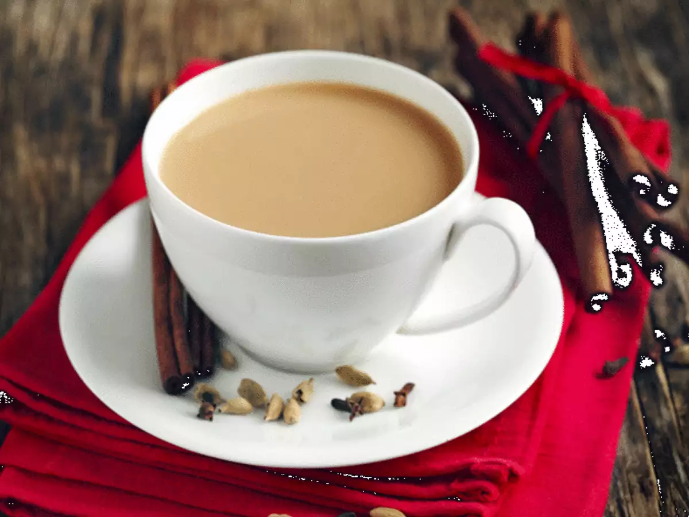

Tea

It is one of the most popular hot beverages in world and especially in India.
Ingredients
- 1 cup (250 ml) Milk
- 2 teaspoons Tea Powder
- 1/4 cup (approx. 60 ml) Water
- 3 teaspoons Sugar
Steps
- Boil water in a saucepan.
- Add sugar and tea powder in it and boil it for 3-4 minutes on medium flame.
- Add milk and boil it over medium flame for 6-7 minutes or until bubble starts to rise.
You will see the change in color of the tea from milky shade to brown shade when it is ready.
- Turn off the gas and strain tea in cups